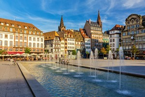

Luoghi da visitare

Strasbourg
Scopri il cuore dell’Europa, dove storia e cultura si incontrano. Dalla maestosa cattedrale gotica al pittoresco quartiere della Petite France, Strasburgo ti incanta con il suo fascino senza tempo.
Visita Strasburgo